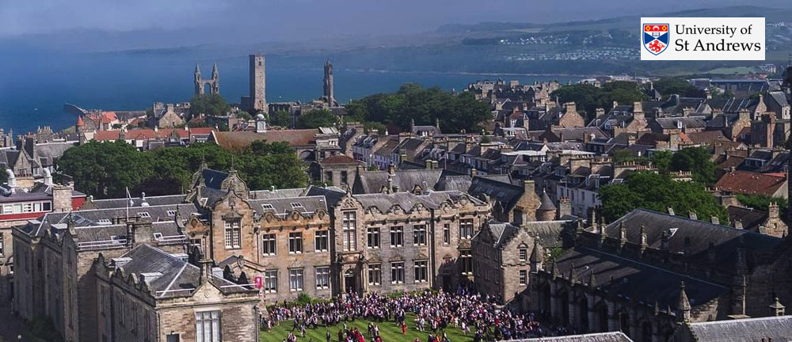
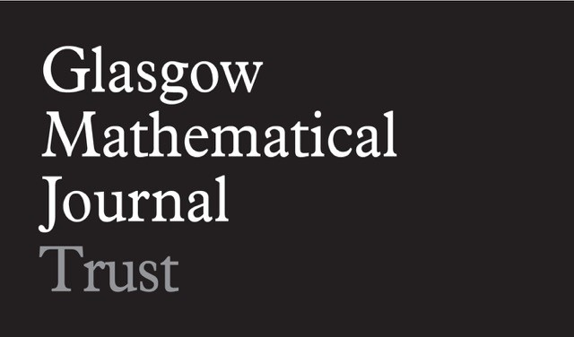
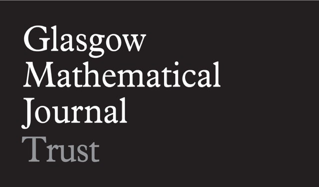

North British Geometric Group Theory Seminar
University of St Andrews, 16 June 2023
Speakers
Tara BrendleUniversity of Glasgow |
Armando MartinoUniversity of Southampton |
Scott HarperUniversity of St Andrews |
Timetable
All talks will be held in Theatre C of the Mathematical Institute, St Andrews KY16 9SS (map), room 116.
| 1.00 – 2.00 pm: Tara Brendle, TBD |
| 2.15 – 3.15 pm: Armando Martino, Centralisers of automorphisms of one-ended hyperbolic groups. |
| 3.15 – 3.45 pm: Tea |
| 3.45 – 4.45 pm: Scott Harper, Generating sets for infinite simple groups. |
| 5.30 pm: Dinner at Zizzi's. |
Please email Collin Bleak by 13 June if you plan to attend dinner. The dinner will be at Zizzi. We expect to be able to partially cover the cost of dinner for postgraduate students and early career researchers.
Support
There is some travel funding for attendees, and PhD students and postdocs will be prioritised. We’d appreciate it if those interested in travel funding contact us before the meeting, so that we can allocate it accordingly.Abstracts
TBD
Tara Brendle, University of Glasgow
TBD
Centralisers of automorphisms of one-ended hyperbolic groups.
Armando Martino, University of Southampton
This is joint work with Naomi Andrew and Gilbert Levitt. In this talk I would like to explain some recent work in understanding the centralisers of automorphisms of a one-ended hyperbolic group, but I shall spend most of the time motivating the question, explaining the terms and describing the techniques.
For instance, the fundamental group of the Klein bottle has a finite outer automorphism group. The Klein bottle group has an index 2 subgroup which is free abelian of rank 2, but this subgroup has a `large' automorphism group. So you get two groups which are very similar - commensurable - whose automorphism groups are very different. The key fact that accounts for this is that there is a matrix whose centraliser is small. While these sorts of considerations are fairly general, our main results are strongest when the groups we start with are hyperbolic.
In particular, for surface groups, we recover the well-known result that the centraliser of `generic' elements of the mapping class group of a surface are virtually cyclic, but using the novel method of understanding the structure of the mapping torus. We extend these methods to the entire mapping class group to prove that centralisers are always well behaved; they are finitely generated, finitely presented and more. This appears to be a new result, despite the classical nature of the objects. We can then extend these techniques to all one-ended hyperbolic groups, via the canonical JSJ decomposition.
Generating sets for infinite simple groups.
Scott Harper, University of St Andrews
Thompson's groups V and T were the first known finitely presented infinite simple groups, and for several decades all known examples of such groups were closely related to them. Both of these groups can be generated by just two elements, a property they share with the finite simple groups. In this talk, I will focus on a broad class of infinite simple groups inspired by Thompson's groups and show that they share some of the strong 2-generation properties of the finite simple groups. I will survey a number of recent results in this area, including joint work with Bleak, Donoven, Hyde and Skipper.
Seminar Information
The North British Geometric Group Theory Seminar is a collaborative seminar that has been running since 2003. The seminar involves geometric group theorists from Heriot–Watt, Glasgow, Newcastle, Durham, York, Leeds, Manchester, Nottingham, St Andrews, and Leicester, and meets three times a year.
We are very grateful for financial support from the London Mathematical Society and the Glasgow Mathematical Journal Learning and Research Support Fund.
 
